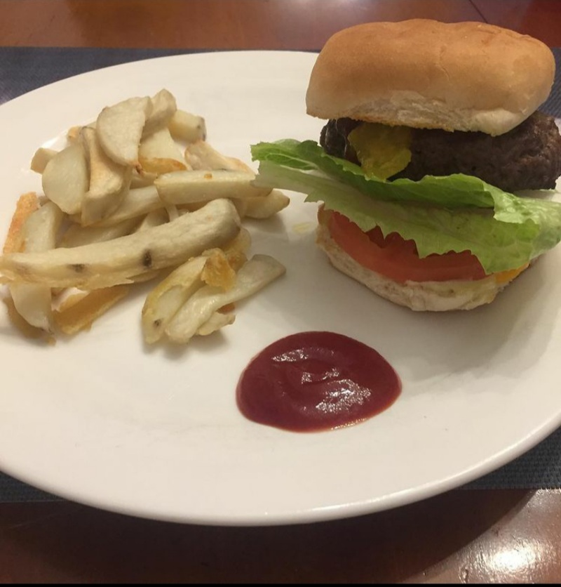

Classic Hamburger with a Side of Fries

A North American classic, this dish captures the feel of summer!
Though eating red meat is not the best ethical choice, a juicy hamburger is a special treat.
Served with a side of french fries, a homemade burger is sure to satisfy!
Ingredients
Hamburgers
- 1 1/4 lb ground beef
- sprinkle of salt & pepper
- 4 hamburger buns
- toppings as desired:
French Fries
- 4 large baking potatoes
- deep fryer or deep heavy pot
- 3" peanut or other vegetable oil
Directions
Hamburgers
- Divide meat into 4 equal portions
- Form each into a patty 1" thick
- Sprinkle with salt & pepper
- Cook, on medium-high in skillet or on grill
- Cook 5 minutes per side, flipping once
- Place burgers in buns
- Add desired toppings and serve
French Fries
- Cut potatoes into strips 2"x1/2"x1/2"
- Soak in cold water to cover for 30 minutes
- Heat oil in fryer or pot to 350 F
- Drain and dry potatoes on paper towel
- Drop potatoes in 1 cup batches into fryer
- Fry until sputtering ceases (about 2 minutes)
- Skim potatoes with slotted spoon, drain on paper towel
- Cool potatoes at least 5 minutes
- Heat oil to 365 F for second fry
- Fry until golden brown, 2-3 minutes
- Drain on paper towel. Do not cover
- Lightly season with salt and serve!